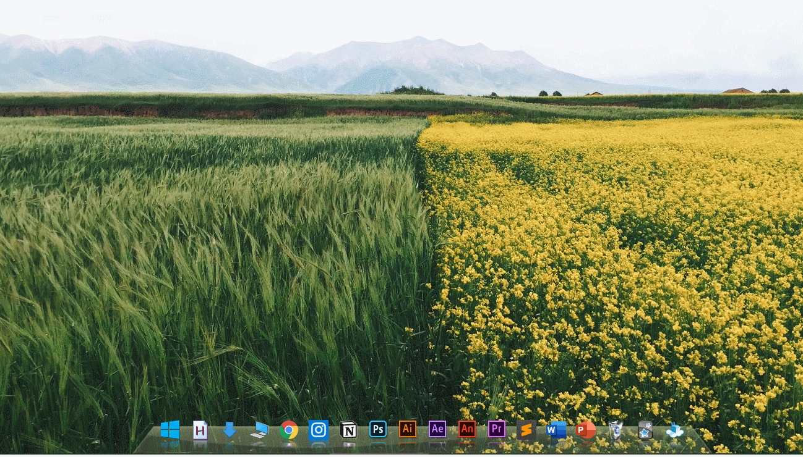
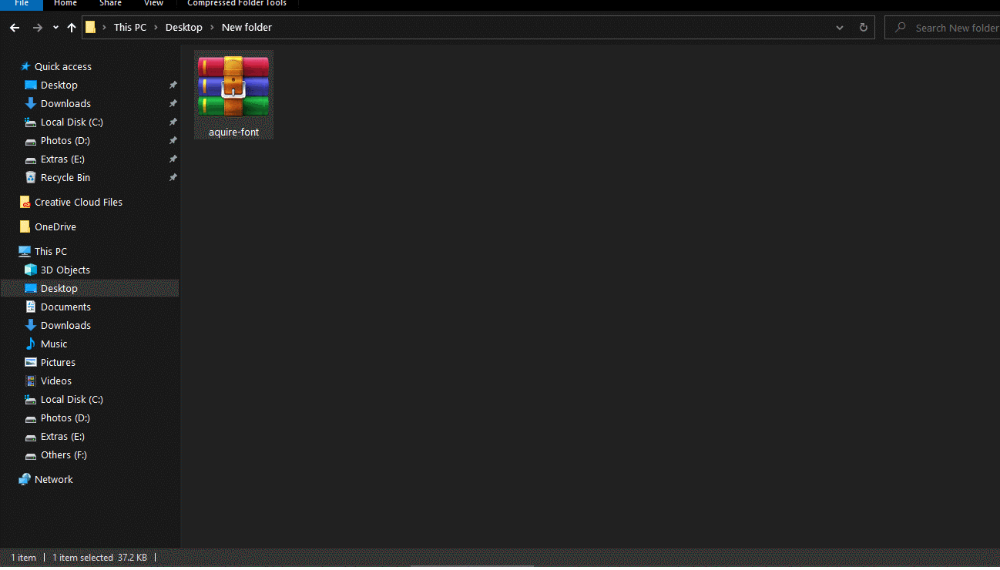

We all can agree that windows is more customizable than mac but the Mac OS is too damn good with small features to make workflow productive and effective. For the alternative of Alfred on Mac, is Wox which launches a navigation toggle just by pressing Alt+ Space or the key you like. It is handy as windows' search bar is not so intuitive. Let’s use a good example. Let’s say we want to open a file. The ‘ordinary’ person’s way of opening the file on a Windows would be to use Search bar to locate the file and double-click it. However, if we look closer at this simple process, it takes quite a few steps.( Taking my Internet Technology labsheet as example)
This whole process of opening the file takes 10-15 seconds. I Hence , wox can be helpful and same goes for the quicklook which helps to quick-preview a file by simply pressing Spacebar.
The process of opening my labsheets of internet technology gets faster by Wox.
I can search anything using 'g' keyword.
It is the most used application and I use it to open every app that I use.
It is a small extension which allows to view files using SpaceBar just like in a Mac.
